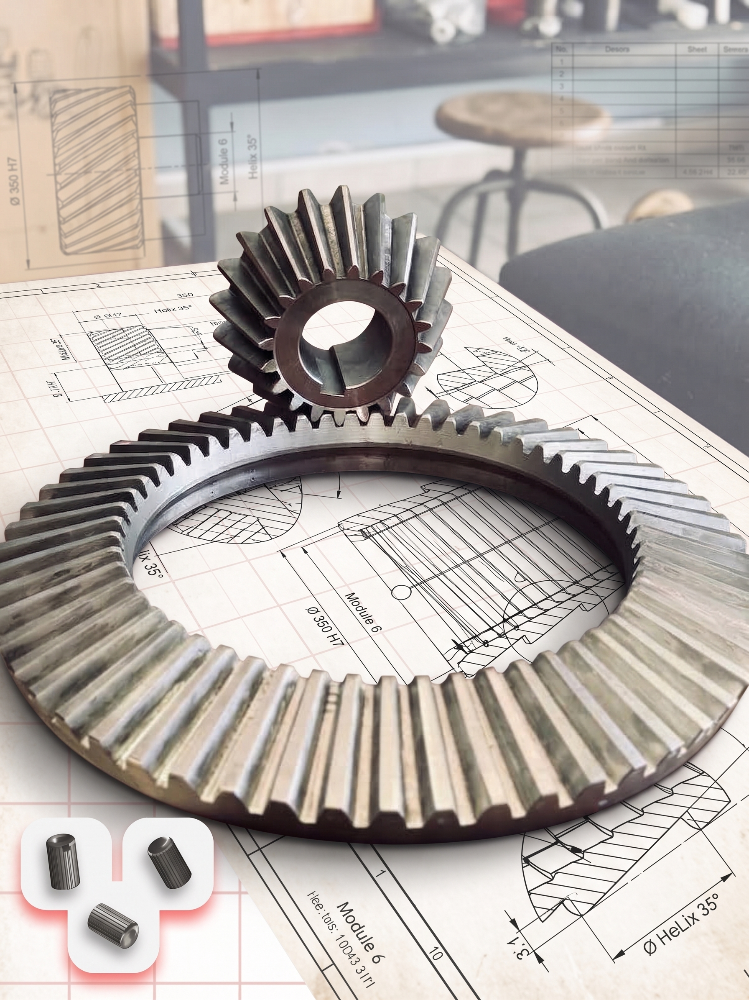
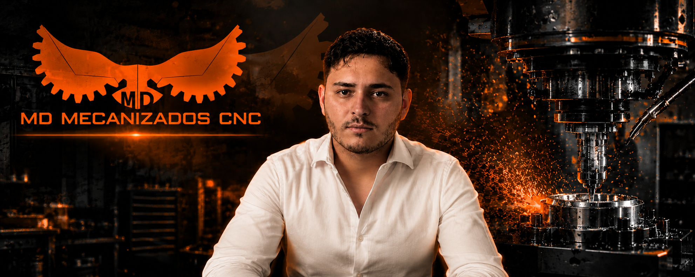
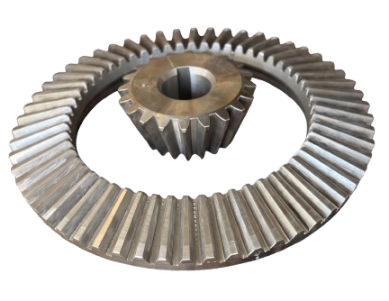

MD MECANIZADOS CNC
Tecnología y soluciones para la industria
Integramos mecanizado CNC, importaciones y formación técnica especializada, ofreciendo soluciones orientadas a las necesidades de la industria.

MAESTRÍA EN TALLER & EQUIPAMIENTO CNC
En Mecanizados Díaz combinamos el rigor de la ingeniería moderna con la experiencia técnica en mecanizado de precisión de alto rendimiento.

SI EXISTE, PODEMOS HACERLO
Galería acumulativa de piezas mecanizadas bajo estrictas tolerancias geométricas. Seleccione la industria para filtrar nuestros desarrollos.


Basket Grapple
Nos especializamos en el diseño y fabricación de Basket Grapple, también conocidos como pescadores de mordazas, esenciales en operaciones de recuperación en pozos petroleros. Estas herramientas están diseñadas para atrapar y extraer tuberías o componentes atascados de forma segura y eficiente, incluso en condiciones extremas.
Nuestra producción utiliza tecnología avanzada, como el Torno CNC Yunnan CY-K510, lo que garantiza piezas de alta precisión con tolerancias mínimas. Fabricados en aceros aleados de alta resistencia al impacto y torsión.
ENGRANAJE CÓNICO DE 800 MM
Fabricación de engranaje cónico de gran porte para la industria calera de San Juan.
Diseñamos y fabricamos un engranaje cónico de 800 mm de diámetro, destinado a maquinaria de trabajo continuo en la industria calera.
El componente fue fabricado en acero SAE 4140 bonificado, seleccionado por sus excelentes propiedades mecánicas y su capacidad para soportar altas cargas, esfuerzos de transmisión y condiciones de trabajo exigentes.
El proyecto involucró mecanizado CNC de precisión, generación del dentado, control dimensional y terminación final, asegurando la correcta geometría y funcionamiento del conjunto.
Una pieza de gran porte, fabricada íntegramente en Argentina y desarrollada para responder a las exigencias de la industria.

NUESTRA TECNOLOGÍA
Contamos con un parque de maquinaria CNC orientado a la fabricación de piezas de precisión para aplicaciones industriales, combinando capacidad de fresado y torneado para resolver una amplia variedad de componentes.

HAAS VF-4 + 4.° EJE
Nuestro centro de mecanizado vertical Haas VF-4, equipado con 4.° eje, nos permite realizar operaciones de fresado, perforado, roscado, interpolaciones y mecanizados complejos en múltiples caras de una misma pieza.
La incorporación del 4.° eje amplía nuestras posibilidades de mecanizado, permitiendo trabajar piezas cilíndricas, realizar divisiones angulares y mecanizar diferentes caras con mayor precisión y repetibilidad.

TORNO CNC CLEVER – GRAN CAPACIDAD
Nuestro torno CNC Clever está preparado para el mecanizado de piezas de hasta 1.500 mm de longitud, con un pasaje de barra de Ø70 mm y una capacidad de mecanizado de hasta Ø500 mm.
Esta capacidad nos permite fabricar ejes, bujes, roscas, componentes de transmisión, piezas de maquinaria y componentes industriales de gran tamaño, trabajando tanto en piezas unitarias como en series continuas.
CAPACITACIÓN Y ACADEMIA CNC
Mecanizado CNC, diseño CAD/CAM y formación técnica — todo lo que compartimos en nuestro canal oficial de YouTube paso a paso.

Curso de Operador CNC – Formación Práctica en Centro de Mecanizado (Haas NGC)

Manual del Operador CNC | Guía completa para manejar FANUC desde cero

Calculá RPM y AVANCES como un profesional | Calculadora CNC gratis

Diseño CAD para mecanizado | De SolidWorks a Fusion 360 (Parte 1)

SolidWorks desde Cero | Pieza N.º 2 - Modelado Completo Paso a Paso

Programación CAM para mecanizado | De SolidWorks a Fusion 360 (Parte 2)

Cómo Programar una Pieza de Grilón en Fusion 360 para una Haas VF-4 | CAM Paso a Paso

Mecanizado CNC de un engranaje de bronce | Haas VF-4 + 4.º eje

Mecanizado de Grilón con Molibdeno en Haas VF-4 | Parámetros y Estrategia CAM

¿Hasta dónde aguanta una fresa Kennametal? Prueba extrema en una Haas VF-4

Pocos saben lo que pasa dentro de un taller CNC

¿La mejor fresa para madera? La importamos y te la mostramos
¿Tienes un proyecto en mente?
¿Necesitas asesoramiento sobre la fabricación de piezas o mecanizado seriado? Estamos aquí para ayudarte a calcular tiempos, tolerancias y presupuestos.